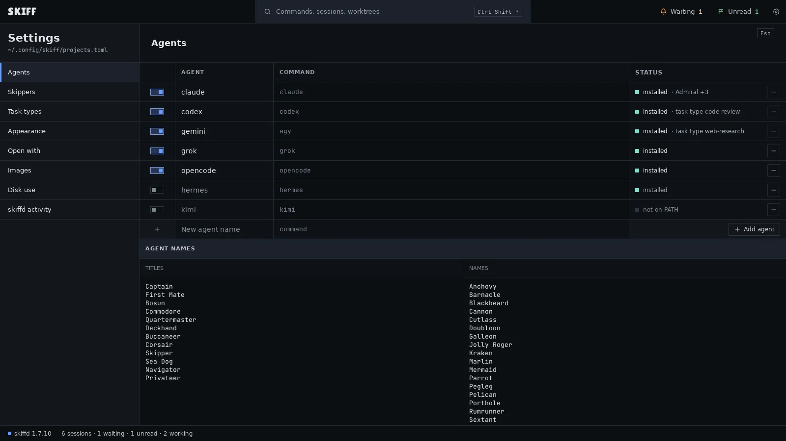
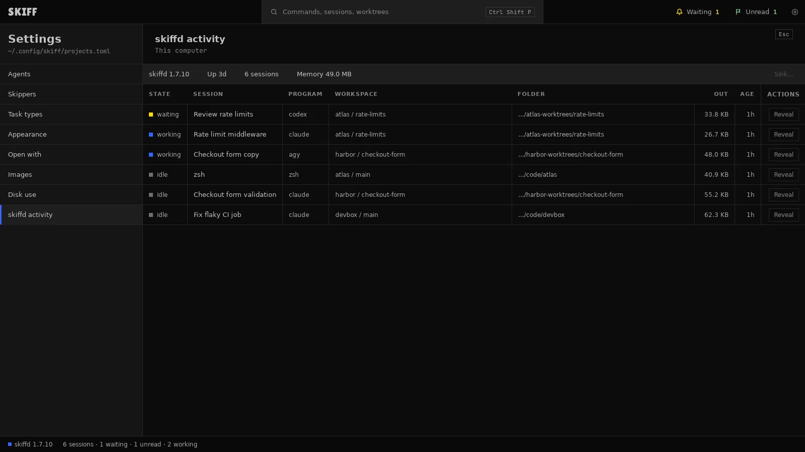
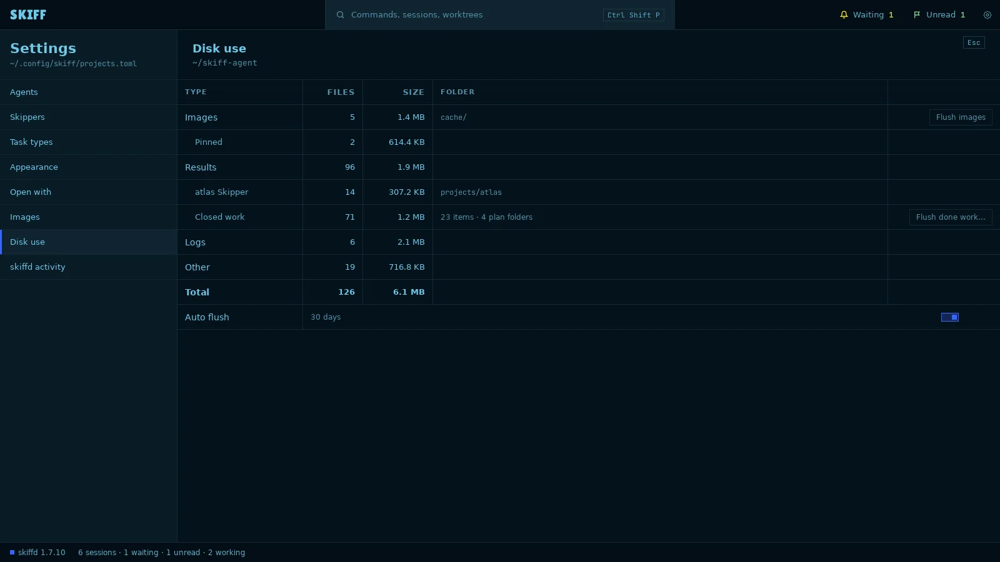
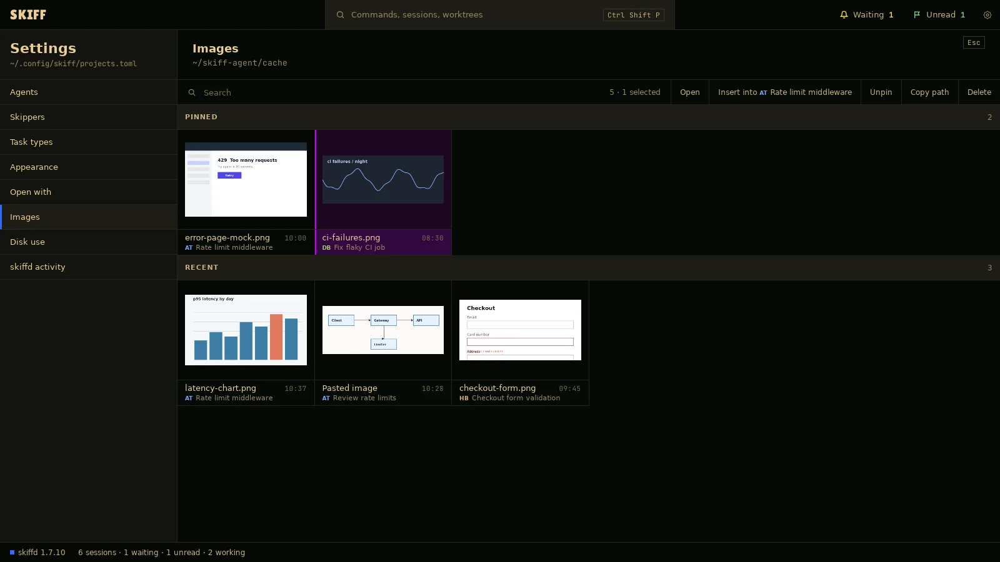
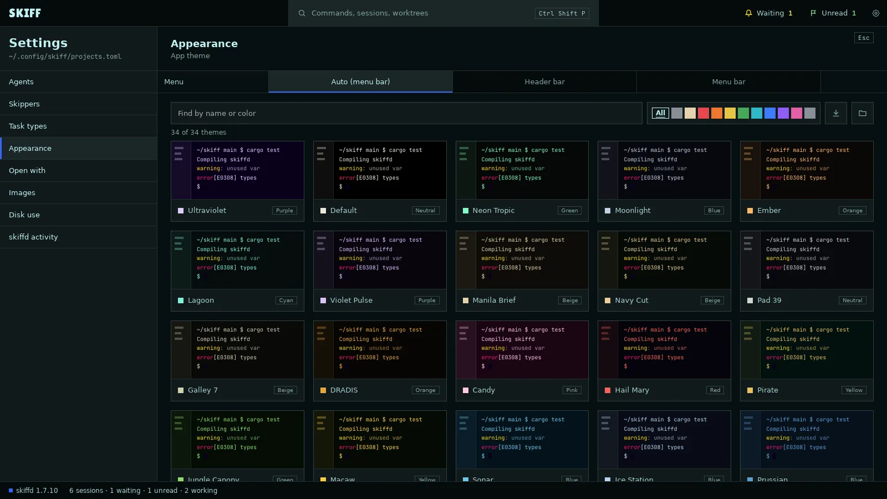
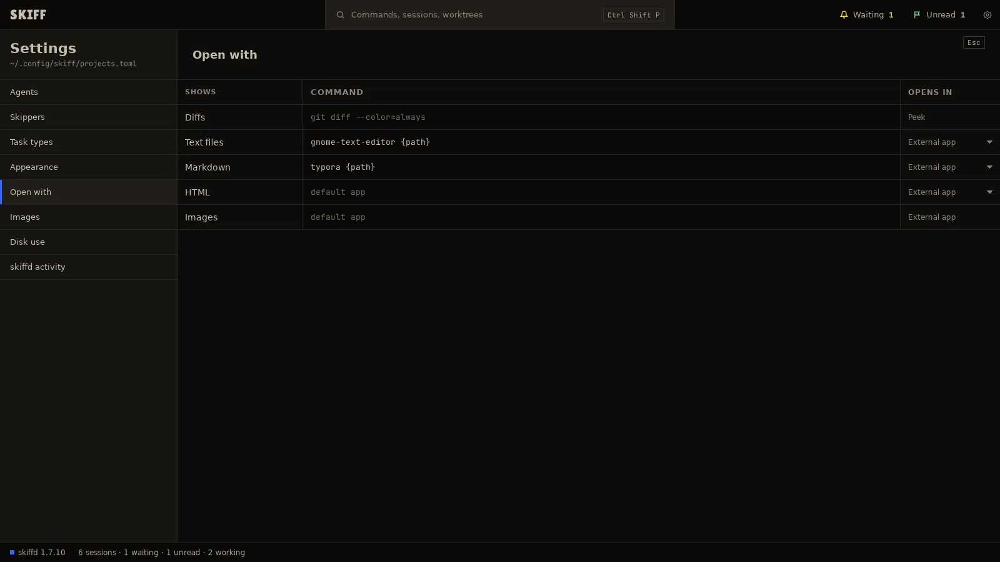

Skiff
SkiffSettings
Settings opens over the window. The list on the left has two groups. The first group has the name of the Host that the window shows, and holds Agents, Skippers, Task types, Schedules, Sessions, Disk use and Images. The App group holds Appearance, Open with and Hosts. A row shows a count where Skiff has one, such as the agents that are on. Chapter 1 covered Skippers and Task types, and chapter 10 covers Schedules. This chapter covers the other seven pages, as of Skiff 2.2.
Agents
- Open Settings › Agents. Each row is one agent: its switch, its name, its program, its flags and its status.
- Click the switch to turn an agent on or off. An agent that is on shows in every launch menu. STATUS reads Installed, or Not found when the Host has no program for it.
- The PROGRAM cell shows the program the Host found. Click it to pick another. Choose… opens a folder, and Show programs lists the programs in it. On a remote Host, the folder is on that Host.
- Click the FLAGS cell to pick Ask for approvals or Skip approvals. Flags set by hand show as Other flags.
- Click Add agent… to add your own agent. Restore defaults brings back a removed built-in agent.
- Under Agent titles and Agent names are the words Skiff joins into the names of new sessions, such as First Mate Pelican.

Sessions
skiffd is the daemon that owns every session. This page lists what it runs on the shown Host, also sessions that no project shows.
- Open Settings › Sessions. The band at the top shows how long skiffd has run and its memory.
- Each row is one session. The columns are STATE, SESSION, PROGRAM, WORKSPACE, FOLDER, OUT, AGE and ACTIONS. A row with no project in Skiff is marked.
- Click a column head to sort by it. Click again to reverse.
- Click Reveal to close Settings and show that session. A closed project opens again for it.
- To end sessions, click their rows. Shift+click selects a range, Ctrl+click (⌘ on macOS) adds or drops one row, Ctrl+A selects all. Then click Sink… or Sink Selected…. The Abandon Ship dialog names the sessions. Confirm to kill them.

Disk use
- Open Settings › Disk use. The table shows the Skiff agent's folder as a tree. The columns are NAME, SIZE, CAN FLUSH and STATE. Click the chevron on a row, or press Space, to open a folder.
- The STATE column says why a file stays or can go: In use, Held, Protected or Stale. Open and working work stays, and so do pinned images, the ledger and the instruction files.
- A row with something to remove has a Flush… button. The dialog lists what goes and what stays, with the counts, before it removes anything.
- Click a file row to open the file as Open with says. The button at the right of a folder row shows the folder in the file manager.
- Auto flush removes images older than 30 days when Skiff starts. Click the switch to turn it off or on. Pinned images stay.
- The Folder row names the Skiff agent's folder. Click Change… to pick another folder. The dialog says what happens next: Skiff switches to a folder it already uses, copies the current folder there and checks the copy, or sets up a new folder.

Images
- Open Settings › Images, or click Edit › Settings › Images…. The page shows the image library as a gallery: PINNED first, then RECENT, newest first.
- Type in the search field to filter by file name, session or project.
- Click an image to select it. Ctrl+click (⌘ on macOS) selects more. The count at the right of the search field says how many.
- The buttons act on the selection. Open opens the image in its app. Insert into and the session name types the path into the focused pane. Pin or Unpin keeps or releases it. Delete removes the file.

Appearance and themes
- Open Settings › Appearance. The Language row picks Auto, which follows the system, or English, Spanish or Simplified Chinese. The window changes language on restart. This guide uses the English names.
- On Linux, the Menu row picks the window's menu: Auto, Header bar or Menu bar. A change shows the next time Skiff opens.
- The Avatar finish row sets the finish of every Skipper face: Flat, Gummy or Plush. A strip of sample faces shows it.
- Under App theme, the cards are the theme of the side panel, the bars and every pane without a project or session theme. Click a card to apply it. Skiff 2.2 added six quiet themes: Chart Room, Engine Room, Kelp, Morning Watch, Plumb Line and Sailcloth.
- Type a name or a color in Find by name or color, or click a swatch, to filter the cards. All clears the filter. The line under the field counts the themes shown.
- Click Import themes… to add theme files. Skiff reads the foot TOML format and Superset's JSON.
- Click Open theme folder to see the theme files. Drop files in it, come back to Skiff, and the list reads them.

A project theme or a session theme replaces the app theme in its scope. See chapter 3.
Open with
- Open Settings › Open with. Each row names what Skiff hands to another program: Diffs, Text files, Markdown, HTML and Images.
- Click the OPENS WITH cell. The list holds the default, the terminal tools and apps Skiff found on this computer, and Choose app… for any other program.
- OPENS IN follows the pick: In the peek for a terminal tool, In its own window for an app.
- A command set by hand in
projects.tomlshows as it is. The Open with page lists commands for common apps on Linux and macOS.

Hosts
A Host is a computer that runs skiffd: this computer, or a server you reach over SSH. The window shows one Host at a time.
- Open Settings › Hosts. The columns are NAME, SERVER, SKIFF, AUTO UPDATE and STATE. This computer is in the list too. Shown in this window marks the Host the window shows.
- Click Add SSH Host…. The list offers the Hosts in your SSH config. Other server… takes a server name, a user and a port. Click Connect.
- Skiff checks the Host and lists each step. A step that fails has a button that fixes it, such as Trust this key…, Install key… or Install Skiff…. Show key file shows your public key file in the file manager.
- The AUTO UPDATE switch updates Skiff on that Host on its own. A row shows Update… when an update is available.
- Click More on a row for Check, Edit…, Rename… and Remove…. Sessions on a removed Host keep running. The remove dialog can also uninstall Skiff from it.